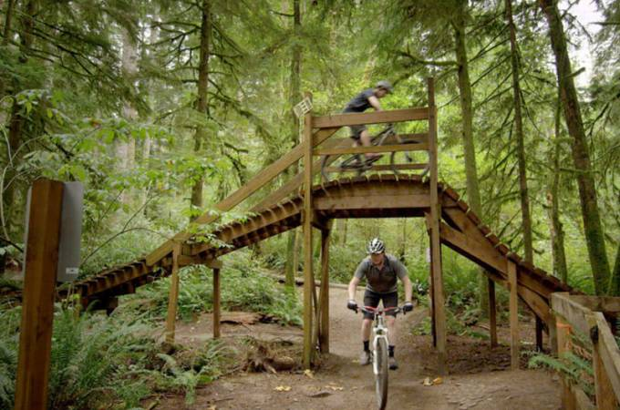

Evergreen is proud to showcase the Duthie Hill Mountain Bike Park. This park is located on the Issaquah Plateau, just north of Grand Ridge Park. The park is a nicely wooded 120 acre forest with rolling
terrain and well draining soils. There is a 2.5 acre clearing in the middle, surrounding by second growth forest. On the south end, Duthie Hill connects with Grand Ridge Park, which already has a 6 mile singletrack trail that connects all the
way to I-90 in the south. On the north end, Duthie Hill can connect to Soaring Eagle Park via a 1 mile ride up Trossachs Boulevard. - Duthies Website
4 flowy XC trails that can be connected into a ~5 mile loop 2 miles of flowy and technical freeride trails of varying difficulty levels Progressive jump lines / flow lines
One Duthie enthusiast's take on the Hill
How to help
1 Join Evergreen - As a member of Evergreen, your voice is amplified by thousands of riders across the state, strengthening our voice when working with politicians and land managers and making our trail work possible. It gives you access to
member benefits and ultimately builds more trails for you to ride
2 Donate online - When you find that sweet new ribbon of singletrack or freshly maintained favorite trail, it's because of the donations we receive to get work done. You may donate directly or via your employer (be sure to utilize matching
if you have it) or via the Trail Karma tool on Trailforks. Sometimes we need "stuff" too so please contact us if you have goods or services to contribute.
3 Volunteer your time. - #RiderPowered trails don't happen without riders making it happen! We welcome the help of individuals, groups, and organizations on our trail work parties. But you don't have to build a trail to help. We can also use
help with chapter leadership, events, marketing, graphic design, web design, or admin tasks. Contact us to find out about opportunities to help!
4 Engage friends, family, coworkers, your business, or other riders. We are very active on social media. You probably are too. Be sure to like, share, subscribe, and follow us! If you are a business, group, or larger organization, you can
help in even more ways by Sponsoring a trail work party or other events, giving a grant or donation, providing discounts or benefits for our members, or otherwise partnering with us. Learn more about the options for sponsoring Evergreen
here.